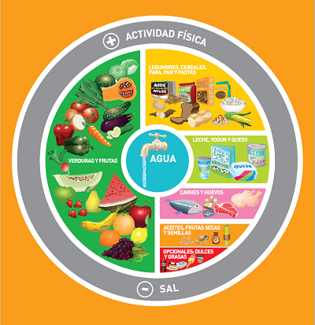

La nutricion es un proceso biologico mediante el cual se absorbe de los alimentos y líquidos los nutrientes que nuestro cuerpo necesita para el buen crecimiento y desarrollo de las funciones vitales.Con una buena alimentación pueden ser evitadas o en su defecto aliviadas muchas de las enfermedades que mas comunmente se presentan en la actualidad (diabetes, HTA, dislipemias).
¿Cual es la mejor manera de tenes una nutricion adecuada para evitar/aliviar estas patologias? Aca te dejo un video de las Guias Alimentarias para la Poblacion Argentina, una gran herramienta que ayuda a reconocer rapidamentes que tenemos que tener en cuenta a la hora de cambias nuestros habitos
Aca te dejo la imagen de la guia alimentaria, la cual resume los 10 mensajes principales para una correcta alimentacion y promocion de salud. Se puede ver como el eje principal de todo es el agua, en donde abundan las verduras y las frutas, las opciones dulces y grasas tienen su lugar como todo en la vida, y siempre siempre rodeado de actividad fisica y una disminucion del consumo de sal
¿Te interesa saber mas? ¿Tenes alguna duda? Contactame y te ayudo o directamente saca un turno y nos vemos en la primer consulta